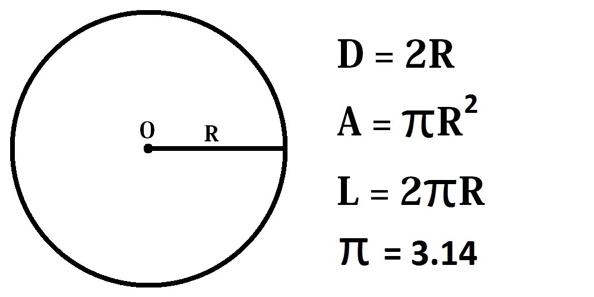
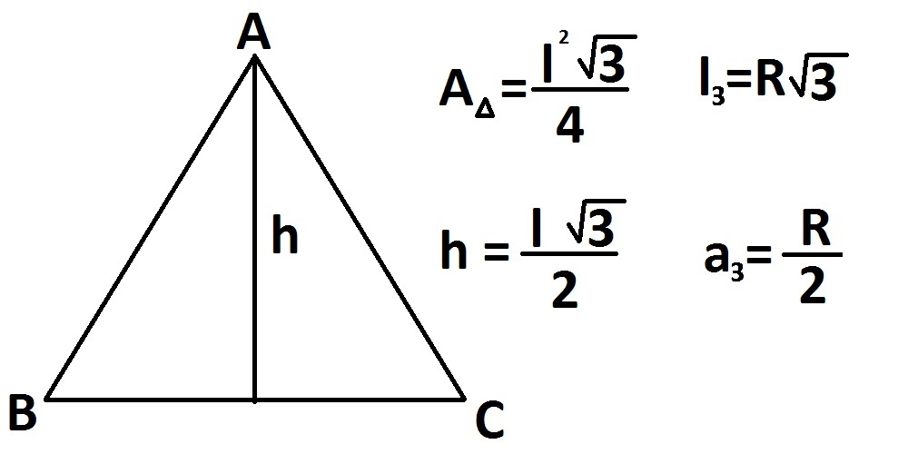
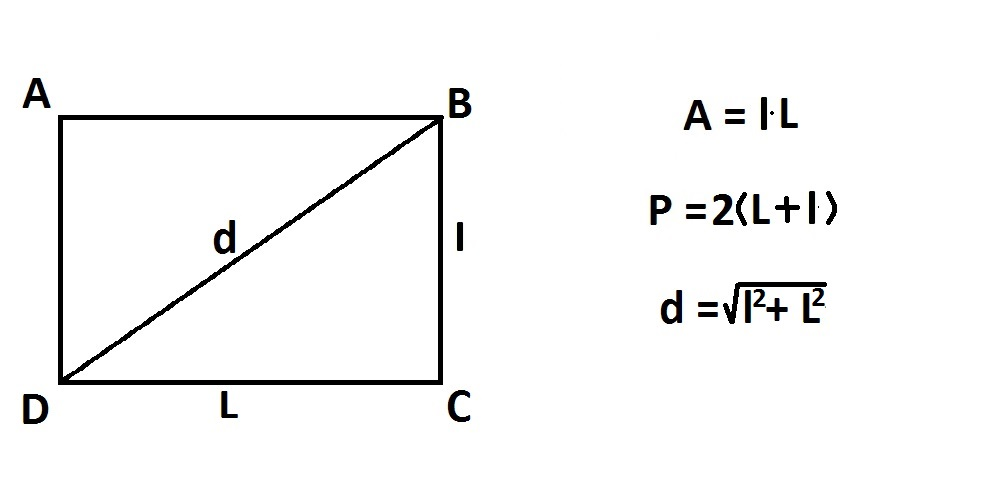

Definitii
Punct – o înţepătură de ac fără grosime, pe o suprafaţă.
Dreapta – un fir de aţă perfect întins, fără grosime, infinit.
Semidreapta – o parte dintr-o dreaptă, limitată la unul dintre capete, numit originea semidreptei.
Segment – porţiunea dintr-o dreaptă cuprinsă între două puncte de pe ea.
Puncte coliniare – trei sau mai multe puncte ce se află pe aceeaşi dreaptă trasată sau nu.
Puncte identice – două puncte ce se află în acelaşi loc.
Puncte distincte – două puncte ce nu se află în acelaşi loc.
Drepte concurente – două drepte coplanare ce au un punct comun.
Drepte paralele – două drepte coplanare ce nu au un punct comun.
Drepte perpendiculare – două drepte coplanare concurente care, intersectate, formează patru unghiuri drepte.
Piciorul dreptei perpendiculare – punctul ce rezultă din intersecţia a două drepte perpendiculare.
Semidrepte opuse – două semidrepte ale căror reuniune rezultă o dreaptă.
Segmente congruente – două segmente care au aceeaşi măsură.
Măsura segmentului – numărul care arată de câte ori se cuprinde o unitate de măsură convenţională într-un segment.
Mijlocul segmentului – punctul aflat pe segment la distanţe egale de capetele acestuia.
Jumătatea segmentului – numărul care se obţine prin împărţirea măsurii segmentului la doi.
Mediatoarea segmentului – dreapta perpendiculară dusă prin mijlocul segmentului.
Unghi – reuniunea a două semidrepte cu aceeaşi origine.
Bisectoarea unghiului – semidreapta aflată în interiorul unghiului care determină cu laturile acestuia două unghiuri congruente.
Unghiuri adiacente – două unghiuri ce au acelaşi vârf, o latură comună şi interioare disjuncte.
Unghiuri complementare – două unghiuri cu suma totală de 90 de grade.
Unghiuri suplementare – două unghiuri cu suma totală de 180 de grade.
Unghi ascuţit – un unghi mai mic decât un unghi drept.
Unghi drept – jumătate din unghiul maxim.
Unghi obtuz – un unghi mai mare decât un unghi drept.
Unghi nul – un unghi ale cărui semidrepte sunt identice.
Unghi maxim – un unghi ale cărui semidrepte sunt opuse.
Unghiuri opuse la vârf – unghiurile care au acelaşi vârf şi laturile opuse (semidrepte opuse).
Unghiuri în jurul unui punct – două sau mai multe unghiuri consecutiv adiacente.
Unghi exterior triunghiului – unghiul suplementar si adiacent unui unghi al unui triunghi.
Triunghi – figura geometrică formată din cele trei segmente determinate de trei puncte necoliniare.
Triunghi oarecare – triunghiul cu lungimile laturilor diferite.
Triunghi isoscel – triunghiul cu două laturi congruente.
Triunghi echilateral – triunghiul cu toate laturile congruente.
Triunghi ascuţitunghic – triunghiul cu toate unghiurile ascuţite.
Triunghi dreptunghic – triunghiul cu unul dintre unghiuri drept.
Triunghi obtuzunghic – triunghiul cu unul dintre unghiuri obtuz.
Perimetrul triunghiului – suma lungimilor laturilor unui triunghi.
Triunghiuri congruente – două triunghiuri cu fiecare latură a unuia, congruentă cu una a celuilalt şi fiecare unghi al unuia, congruent cu unul al celuilalt.
Mediana triunghiului – segmentul care uneşte un vârf al unui triunghi cu mijlocul laturii opuse.
Înălţimea triunghiului – segmentul ce uneşte un vârf al triunghiului cu piciorul dreptei perpendiculare duse din acel vârf pe latura opusă.
Bisectoarea triunghiului – segmentul de pe bisectoarea unui unghi al unui triunghi, cuprins între vârful unghiului şi latura opusă.
Centrul de greutate al triunghiului – punctul de intersecţie a medianelor unui triunghi.
Cerc -mulțimea tuturor punctelor din plan, egal depărtate de un punct fix numit centru.
Rază – dreapta ce unește centrul cercului de unul din punctele sale.
Diametru -orice segment care are ca extremități două puncte de pe cerc și trece prin centrul cercului.
Cercul
În geometria euclidiană, cercul este mulțimea tuturor punctelor din plan, egal depărtate de un punct fix numit centru. Distanța comună este denumită de obicei raza cercului.
Triunghiul echilateral
Triunghiul este poligonul închis format din trei laturi egale.
Patrat
Pătratul este patrulaterul cu toate laturile egale si cu toate unghiurile egale cu 90 de grade.

Dreptunghi
Dreptunghiul este patrulaterul cu laturile opuse paralele si cu toate unghiurile egale cu 90 de grade
Hexagon regulat
Hexagonul regulat este un poligon regulat convex cu șase laturi egale. Unghiurile sale interne sunt congruente, având fiecare măsura de 120° (suma măsurilor unghiurilor acestuia fiind de 720°, ca la orice hexagon).
Cubul
Cubul sau hexaedrul este un poliedru limitat de șase fețe de formă pătrată. Cubul este paralelipipedul dreptunghic cu toate muchiile egale.